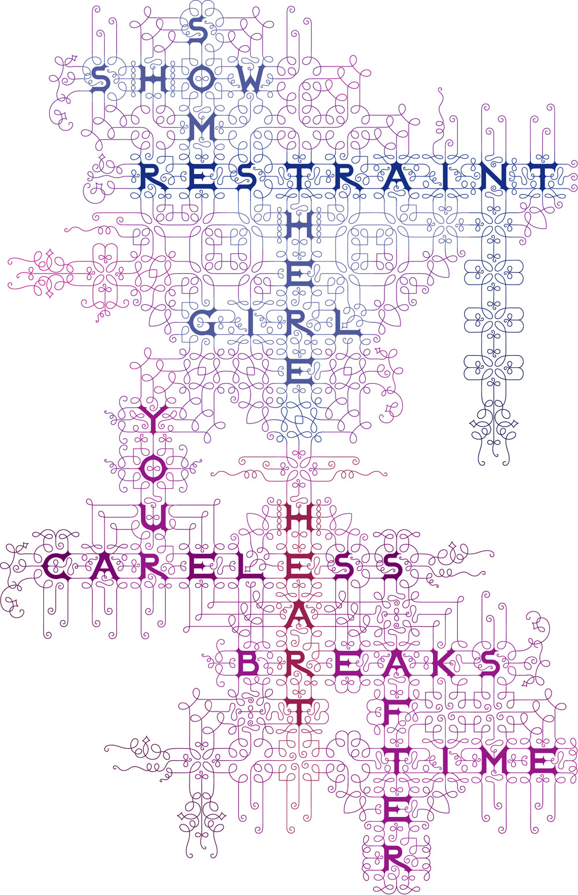

Bantjes does not enter Awards herself but sometimes other people enter on her behalf. She has won many achievements and awards over the years, some notable ones being Type Directors’ Club 54. For TypeCon in 2008. For her font that she designed earlier that year. Communication Arts, Award of Excellence with Pentagram for “The Alphabet.” in 2007. And a Certificate of Excellence, with Pentagram for “Yale School of Architecture for her Seduction Poster. 2007.
